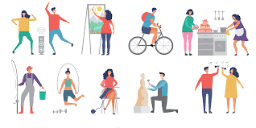
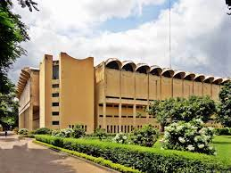

Family
There are 4 members in my family. My father, my mother, my younger brother and me. My father's name is 'Makbul Hossain Mozumdar'. He is now abroad. My mother's name is 'Salma Dhali'.
Hobbies
Describe my hobbies here.
My hobbies reflect my diverse interests and passions. One of my greatest passions is exploring new technologies and learning about coding. I find immense joy in experimenting with programming languages and creating projects that solve real-world problems. Beyond the digital realm, I am an avid reader, with a particular fondness for science fiction and mystery novels. The imaginative worlds and intricate plots captivate my mind and offer a welcome escape from reality.
When I'm not immersed in books or coding, I enjoy the camaraderie and adrenaline rush of playing football with friends. The competitive yet collaborative nature of the game fosters teamwork and sportsmanship, qualities that I value both on and off the field. Additionally, I have a creative side that finds expression through sketching landscapes and urban scenes. Capturing the beauty of nature and cityscapes on paper allows me to unwind and appreciate the artistry in everyday life.
These hobbies not only provide me with relaxation and joy but also contribute to my personal growth and development. They inspire me to explore new ideas, hone my skills, and cultivate a balanced lifestyle that encompasses both intellectual pursuits and creative expression.
Achievements
I, Shahriar Mozumder, reflect upon my journey through the 8th standard with pride and accomplishment. This year has been a testament to dedication, perseverance, and the pursuit of knowledge. As a student of [School Name], I have strived to excel in various spheres of academic and extracurricular activities, setting milestones that define my growth and potential.
Visiting Places
The Bangladesh National Museum (Bengali: বাংলাদেশ জাতীয় জাদুঘর, romanized: Bānlādēśa jātīẏa jādughara), is the national museum of Bangladesh.[2] The museum is well organized and displays have been housed chronologically in several departments like department of ethnography and decorative art, department of history and classical art, department of natural history, and department of contemporary and world civilization. The museum also has a rich conservation laboratory. Nalini Kanta Bhattasali served as the first curator of the museum during 1914–1947
Aim of Life

As aim of become an computer science engineer, my aim in life is to harness the boundless potential of technology to innovate and solve complex problems. From an early fascination with computers and their ability to transform ideas into reality, I have nurtured a deep-seated passion for understanding the intricate mechanisms that power our digital world.
Shahriar Mojumder
Demra, Dhaka